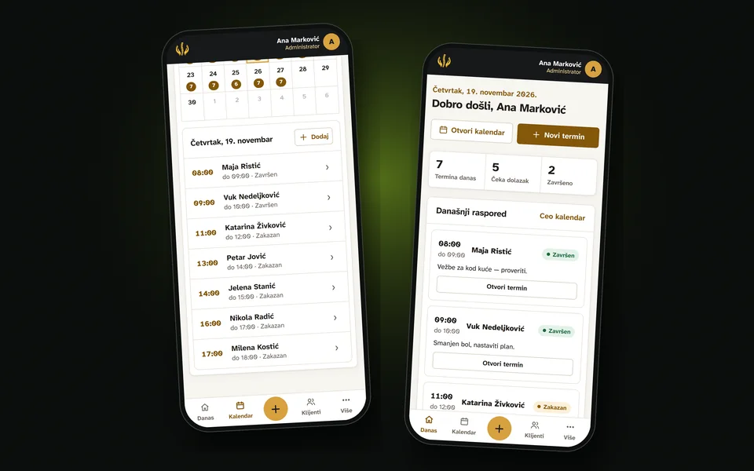

Fallstudie · Kundenprojekt
Fizio Alfa Weniger Verwaltung. Mehr Zeit für Patienten.
- Kunde
- Physiotherapiepraxis
- Meine Rolle
- Alles, vom Gespräch bis zum Server
- Plattformen
- Computer, Tablet und Handy
- Technologie
- Django, PostgreSQL, Docker
- Betrieb
- Privater Server, nur für das Personal

48 Sekunden durch das System: Tagesplan, Kalender, Abrechnung, Kundenakte, Auswertung und Handy. Fiktive Daten.
01 · Kontext
Ein Team, das mit Menschen arbeitet, nicht mit Tabellen.
Fizio Alfa entstand aus Gesprächen mit dem Team einer Physiotherapiepraxis und wurde nach ihrer Arbeitsweise gebaut — nicht nach einer fertigen Vorlage.
Das Problem: Termine, Kunden und Abrechnung wurden getrennt geführt. Schwer zu sehen, wer gebucht war, was gemacht wurde und wer bezahlt hatte; jede Kontrolle hieß, mehrere Quellen durchzugehen.
- Wer wann gebucht ist — an einem Ort
- Was gemacht wurde — an einem anderen
- Wer bezahlt hat — an einem dritten
- Das ganze Team sieht dieselbe Woche; Doppelbuchungen sind ausgeschlossen
- Die Auswahl der Therapien summiert den Preis
- Der offene Betrag steht in der Akte, ohne Rechnen
02 · Lösung
Ein Panel für das ganze Team.
Gemeinsamer Kalender, Kundenakte, schnelle Preiseingabe pro Therapie, Überblick über offene Beträge und Erinnerungen auf dem Handy. Jeder Teil ist um eine alltägliche Aufgabe in der Praxis gebaut.
Kalender
Dieselbe Woche für alle.
Alle Therapeuten sehen denselben Plan, mit Terminen in Statusfarben. Das System lässt keine zwei Termine zur selben Zeit für denselben Therapeuten zu.

Abrechnung
Der Preis in Sekunden.
Nach dem Termin werden die erbrachten Therapien markiert, und das System summiert den Betrag nach der Preisliste der Praxis. Ohne Taschenrechner und Abschreiben.

Kundenakte
Verlauf und offener Betrag an einem Ort.
Alle Termine eines Kunden, erbrachte Therapien und was noch offen ist. „Wie viel schulde ich?“ ist in einer Sekunde beantwortet.

Handy und Erinnerungen
Der Plan in der Tasche.
Tagesagenda und neuer Termin mit einem Tipp. Jeder Therapeut bekommt Erinnerungen nur für seine Termine, auch wenn die App geschlossen ist.

Erinnerungen kommen als Benachrichtigungen auf Handy und Computer (Web Push).
03 · Rolle des Studios
Eine Person, vom Gespräch bis zum Server.
- 01Gespräche mit dem TeamWie sie heute arbeiten und wo Zeit verloren geht.
- 02DesignBildschirme nach einem echten Praxistag.
- 03EntwicklungKalender, Akten, Abrechnung, Rollen, Änderungsverlauf.
- 04InbetriebnahmePrivater Server, nur für das Personal erreichbar.
- 05BackupsRegelmäßige Datenbanksicherungen.
- 06WartungKorrekturen und neue Funktionen, wenn das Geschäft wächst.
- Django
- PostgreSQL
- Docker
- Web Push
- Privater Server
Zu Ergebnissen: Zahlen zur Zeitersparnis oder Kundenzitate veröffentliche ich erst, wenn die Praxis sie bestätigt. Alles hier ist das echte System, gezeigt mit erfundenen Daten.